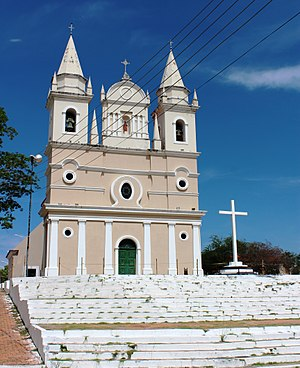

Teresina tem suas raízes na Barra do Poti, onde, em 1760, já havia um aglomerado de fogos, ou seja,
casas
habitadas por pescadores, canoeiros e plantadores de fumo e mandioca.
Historicamente, a mudança da sede administrativa da Província do Piauí, para a Vila do Poti, hoje
Teresina,
se
deve, em primeiro lugar, em razão da localização da então sede, Vila da Mocha, encontrar-se no sertão,
região
seca e árida, distante aproximadamente 30 léguas do Rio Parnaíba, principal meio de escoamento econômico
da
época e muito distante do mar, onde já se localizava um potencial posto de comércio (compra, venda e
troca)
futuro, com o mercado externo e fácil intercambio com outros centros de civilização do Império. Ainda,
segundo
alguns historiadores, a então capital, ficava distante da cidade de São Luis, cidade sede do Governo do
Estado
do Maranhão e Grão – Pará, cuja jurisdição a capitania do Piauí era subordinada e próxima à cidade de
Caxias
(MA), a segunda maior cidade em importância econômica do Maranhão. A Vila do Poti, localizada na
confluência
dos
Rios Parnaíba com o Poti, (barra do Poti) era cortada pelas estradas que ligavam Oeiras a Parnaíba e com
sua
posição geográfica privilegiada, foi denominada de Vila Nova do Poti, a qual foi elevada á categoria de
cidade
por força da resolução N° 315, de 21 de julho de 1852, editada pelo então Presidente da Província do
Piauí,
José
Antonio Saraiva, com o nome de Teresina.
Vale ressaltar que a transferência da capital da Província do Piauí de Oeiras para Teresina realizou-se
sob
vários protestos da comunidade oeirense, que desejava a todo custo, garantir a permanência da capital
naquela
cidade.
Contudo, apesar da pressão, o Presidente da Província, José Antônio Saraiva, ardoroso defensor das
ideias
mudancistas, efetiva a transferência da capital. E em 16 de agosto de 1852, dirige circular a todos os
Presidentes de Província do Império comunicando o fato.
Autorizada a transferência da sede do governo da Província para a nova cidade, registrou-se
extraordinário
aumento populacional, transformando-se num dos maiores centros comerciais da região, demonstrando desde
já,
sua
vocação comercial.
 A influência da religião católica fez-se notar desde a fundação da cidade, que já nasceu capital. Ao ser instalada a Vila Nova do Poti na Chapada do Corisco – local assim chamado em virtude das fortes trovoadas e frequentes faíscas que caem durante a estação chuvosa; o primeiro edifício construído foi a Igreja de Nossa Senhora do Amparo, padroeira dos potienses.
O prédio da igreja serviu de ponto de referência para o traçado de Teresina, cujo território compreendia, de norte a sul, um quarto de légua para cada lado, tendo a Igreja de Nossa Senhora do Amparo como centro; e de leste a oeste, o espaço entre os Rios Parnaíba e Poti. Segundo a História, a Imperatriz Dona Teresa Cristina Maria de Bourbon teria apoiado junto ao Imperador a ideia da mudança da capital e, em sua homenagem, Saraiva denominou a cidade de Teresina (antigamente grafado Theresina).